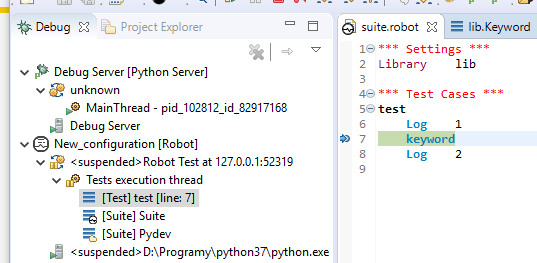
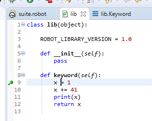

or automatically if proper PyDev preference is enabled (
Preferences -> PyDev -> Debug -> Remote debugger server activation).
It is possible to setup debugging sessions on both Robot and Python code levels using RED together with PyDev in single RED/Eclipse instance.
pydevd debugger module - this is provided by PyDev or manually, can be also installed into
Python with pip,
redpydevd runner script - this is provided by RED or manually.
In order to setup debugging sessions proper launch configuration needs to be created. In order to do this
one can simply run a wizard:
New -> Other -> Robot Framework -> RED with PyDev debugging session. The launch configuration
created by this wizard will be created for selected suites inside project (if there is a suite selected in Project
Explorer view).
First page of wizard allows to choose any environment from those defined in Preferences. It will be used
to execute the redpydevd runner script and effectively the chosen Robot suites.
Second page allows to choose which redpydevd script should be used. There are 3 possibilities:
redpydevd installed or
is outdated (in different version than currently supported) then RED will use sdist and pip
to install that module (offline),
redpydevd module expected by RED is displayed at this wizard page.
Make sure to use the same version if you're using already existing script exported to local location some time ago.
Last page allows to choose which pydevd module should be used. There are 3 possibilities:
pydevd is not
installed. You need to manually install it using pip to enable it. Not that the version may
be different than the one provided by PyDev as visible on screen above,
pydevd from elsewhere.
It is also possible to set the address and port on which PyDev will communicate with the module.
Gevent library then please select Gevent
compatible checkbox. This will add GEVENT_SUPPORT environment variable set to True.
It is required for pydevd in order to be able to debug such libraries. Without this the debugger
sessions may hang.
After clicking Finish RED will install or export redpydevd runner (if neeeded) and create
new launch configuration with prefilled External script settings at Executor tab. For example:

In order to be able to debug: the project and suite(s) needs to be defined at Robot tab of launch configuration. It may be already defined if suite was selected in Project Explorer view when starting wizard. Next one need to:
Preferences -> PyDev -> Debug -> Remote debugger server activation).
After launching one should see Robot debugger stopping at breakpoint:
In this example the keyword keyword comes from tiny local library. Once Step Into (F5)
is executed the editor should open:
This dummy editor explains that RED debugger cannot go into library keywords code on it's own but PyDev can be used cooperate and be able to debug Python-level code. One can use Click here and RED should open Python script where keyword is defined:
Put a breakpoint there and resume Robot code execution. Now PyDev debugger should pause allowing to debug Python code (note there are two sessions in Debug view - one of PyDev operating on Python code and second of RED operating on RF code):